The Rok Manual
A voxel editor, explained chapter by chapter. Every part of the window, every tool and every key.
Hello
In which you learn what a voxel is, and are asked to stay.
A voxel is a cube. That is the whole idea. You put cubes next to other cubes, and after a while there is a bird, or a house, or a car. Rok is the program where you do that.
This book walks you through the program in the order you will meet things: the window, the first cube, moving the camera, colours, and then the larger machinery. You do not have to read it in order. Nobody checks.
What Rok is
- A voxel editor. You open a
.voxfile, change it cube by cube, and save it as.voxagain. - A scene editor. Several models live together, you move them, copy them, cut them, and line them up.
- A small render studio. The viewport has twelve looks, and a path tracer makes finished pictures.
- An animation tool. Parts turn and swing, frames flip, and the result goes out as glTF, a sprite sheet, a GIF or an MP4.
- A brick kit. Turn a model into bricks and build on it, brick by brick.
Rok is its own app. There is no other 3D program behind it. Rust draws and Python thinks.
The Window
In which the parts of the screen are named, so that the rest of the book can point at them.
Start Rok and the welcome screen opens. It has two buttons. Press N for a new model, O to open a file, or Esc to start with an empty 32 × 32 × 32 model and no questions. The recent files sit on the right once you have some.
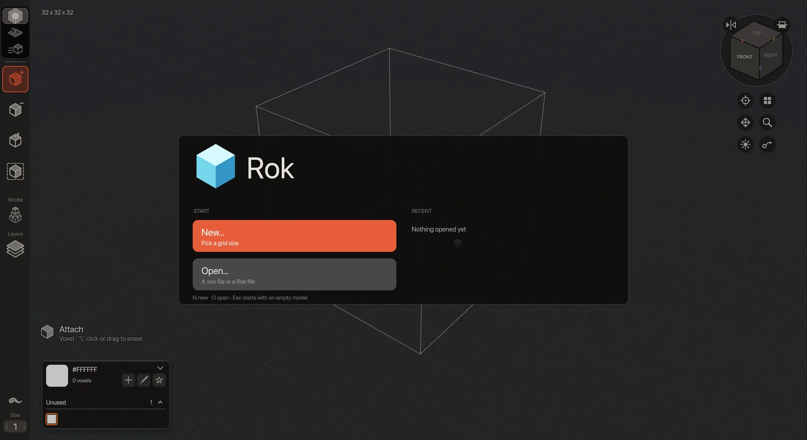
1 2 3- 1New… opens the grid-size dialog. N does the same.
- 2Open… takes a
.voxor a.rokfile. O does the same. - 3Recent lists the last files you had open. Click one.
The New dialog offers sizes with names. Pick one, or type your own three numbers. A model can be as small as an icon (16 × 16 × 16) and as large as a whole scene (256 × 256 × 128). Start small. Small models are finished more often.
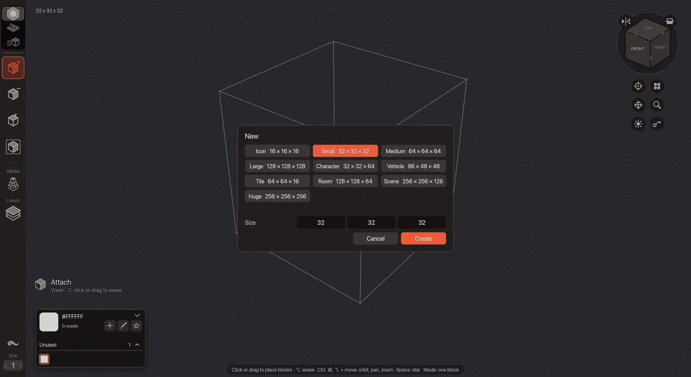
The window, labelled
Here is the whole window with a model open. The bird is one of the test models that come with Rok.
- 1The level switch. Model, Scene, Animate. Tab cycles them. Chapter VIII and XII.
- 2The four tools. Attach, Erase, Paint, Select. Hover a tool for its modes.
- 3Model. The whole-model commands: mirror half, hollow, lathe, twist, cage, and more. Chapter VII.
- 4Layers. Show, hide and pick the layers your models sit on.
- 5Stroke and Size. The brush size, and above it the Stroke Designer.
- 6The grid size. This bird lives in 80 × 68 × 22 cells.
- 7The readout. The tool, its mode, and what a click does right now.
- 8The palette card. The current colour, the colours in use, and the rest. Chapter V.
- 9The nav cube. Click a face to look from that side. Section and Mirror sit on its rim.
- 10The view buttons. Centre, Quad, Pan, Zoom, Rendered view, Steady Hand.
- 11The hint line. It always tells you what the mouse and each modifier key do now. Read it when lost.
- 12The model box. The faint edges of the grid. Voxels live inside; nothing lives outside.
The three levels
Rok has three levels, and the rail changes colour with them.
- Model is where you place voxels. One model, four tools, the grid.
- Scene is where models are things. You pick them, drag them, copy them, cut them.
- Animate is where parts move. A timeline opens along the bottom.
Tab steps to the next level. Enter steps into the picked model. Esc first drops the selection, then steps out to the scene. Brick mode is a fourth way of working inside a model; it has its own chapter.
Your First Voxel
In which cubes are placed, removed and painted, and the ghost is explained.
Pick Attach (T). Move the mouse over the model. A pale cube follows the pointer: the ghost. It shows exactly where the next voxel goes, on the face you point at. Click, and the ghost becomes a voxel. Drag, and it becomes many.
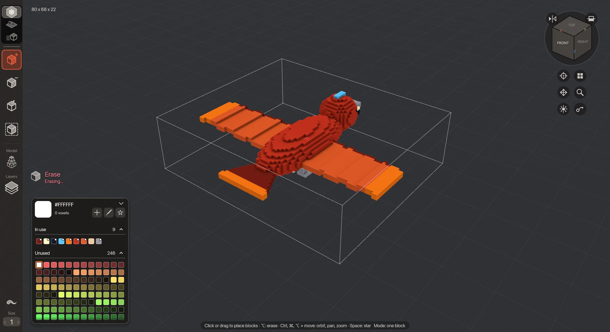
You do not need to switch tools for the common things.
- ⌥ + click erases, with any tool.
- Shift + click paints the current colour onto the voxel.
- ⌘Z undoes. Every stroke is one step. Undo goes back 64 steps and never asks why.
The four tools, with their keys: Attach T, Erase R, Paint G, Select Z.
Modes
Hover a tool button and a row of modes slides out. A mode decides what one click or drag means.
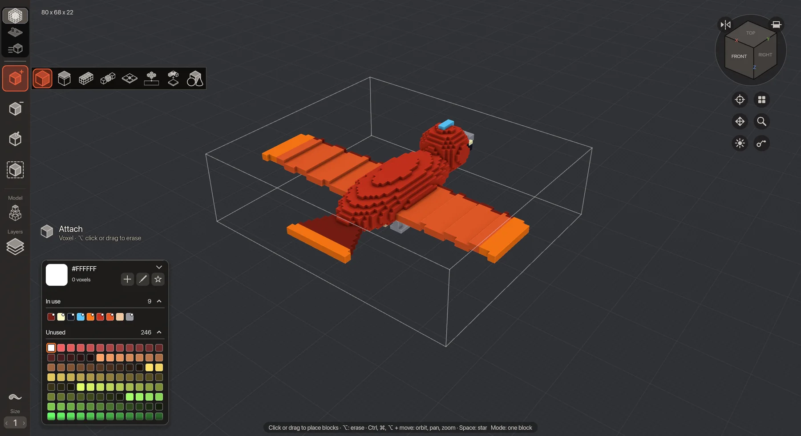
1 2 3 4 5 6 7 8- 1Voxel V: one cube per click, a trail per drag.
- 2Face F: the whole flat face under the mouse, raised by one.
- 3Box B: drag a rectangle on a face, then pull it up to a height.
- 4Line L: a straight run of voxels from here to there.
- 5Center C: a box that grows from its middle.
- 6Pattern P: stamp the cluster you copied; add it, carve it, or punch holes.
- 7Clone: stamp the copied cluster with its own colours.
- 8Primitives: spheres, cones, stairs, gears and a tower. Twenty-three shapes, each a drag.
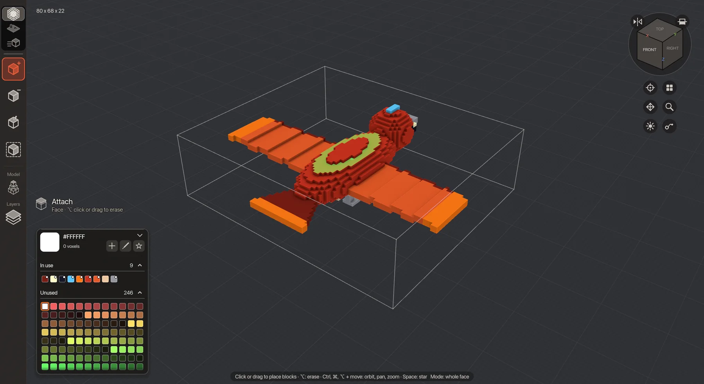
Primitives
The last button of the Attach row opens the shapes. Drag a box on a face and the shape fills it: Sphere, Dome, Buckyball, Capsule, Pyramid, Cone, Diamond, prisms, Tube, Wedge, Roof, Stairs, Torus, Rock, Hill, Gear, Spiral Ramp, Tower. Rock and Hill are different on every drag. Most shapes can be hollow.
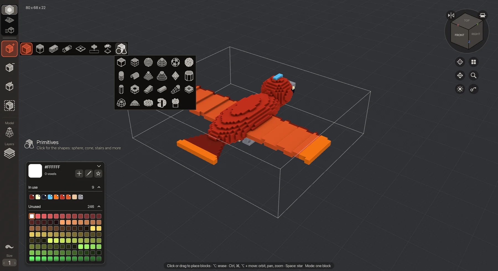
Size, and the shape of a stroke
The Size field at the bottom of the rail is the brush: a ball of voxels. Drag the number left or right. Above it, the wavy button opens the Stroke Designer, where a stroke can start thick and end thin, go round or square, and change colour along the way.
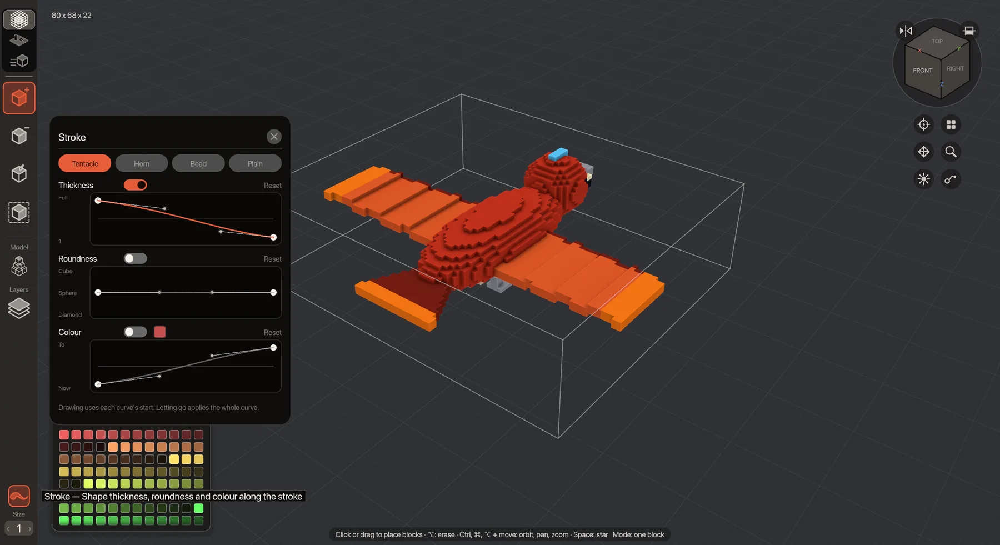
Steady Hand
Press H and the brush follows the mouse on a string. Fast wobbles do not reach the model; slow moves do. A white line shows the string while it is taut. The button under the nav cube does the same, and the string's length is in Rok › Settings.
Mirror. The Mirror button on the rim of the nav cube opens X, Y and Z. Turn one on and every voxel you place appears on the other side too. Chapter VI shows it.
Moving Around
In which the camera is turned, pushed and pulled, with the trackpad, the mouse and the keys.
With a trackpad
- Two fingers orbit around the model.
- ⌃ + two fingers pan.
- ⌥ + two fingers zoom. A pinch zooms too.
With a mouse
- Hold ⌃ and move: orbit.
- Hold ⌘ and move: pan.
- Hold ⌥ and move: zoom. The wheel zooms too.
Hold the key alone, with no click. The view follows the mouse until you let go. Nothing happens on the middle button, on purpose.
With the keys
W A S D fly the view, Q and E go down and up. The keys are for the camera. The arrows are for a cursor, see Chapter VI.
The nav cube
The cube in the top right turns with the camera. Click a face to look straight at it, near an edge to look along both faces, near a corner to look from the corner. The view glides there. Drag the cube to orbit.
- 1Section. Opens X, Y, Z. A section plane cuts the model open so you can work inside.
- 2Mirror. Opens X, Y, Z. Every stroke appears on both sides of the plane.
- 3Centre. Frames everything; click again to frame the model.
- 4Quad. Four views at once: top, front, right and perspective.
- 5Pan and 6 Zoom. Drag on the button. The pointer hides and the view moves.
- 7Rendered view. The path tracer takes over the viewport. Chapter IX.
- 8Steady Hand. The brush on a string, as in Chapter III.
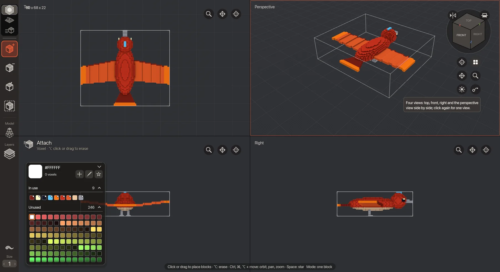
View › Saved Views keeps four camera positions. Save one with the model from the left, one from behind, and jump between them. Turn the model round often: a hole in its back shows only from behind.
Colours
In which the palette card is opened, a colour is mixed, and a star is awarded.
The card at the bottom left holds the colours. The big swatch is the current colour: what Attach places and what Paint paints. Under it, In use lists every colour the model has, and Unused the rest of the palette. Click a swatch to make it current. Press I over a voxel to take its colour.
Click the big swatch, or the pen next to it, and the editor slides open.
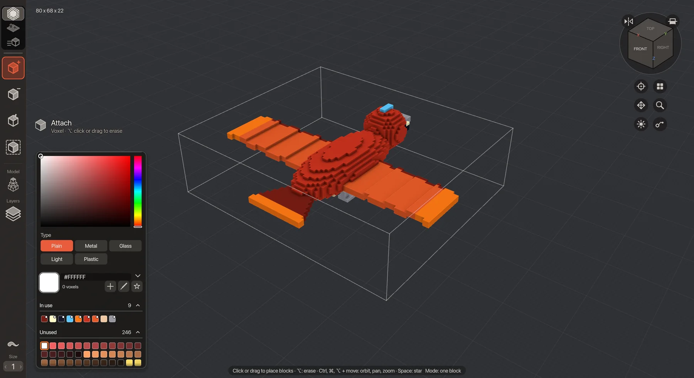
1 2 3 4 5 6 7 8 9- 1The picker. Drag for lightness and saturation.
- 2The hue bar. Drag for the hue.
- 3Type. Plain, Metal, Glass, Light or Plastic. Light glows in the Night look and in renders.
- 4The current colour, with its hex value and how many voxels wear it.
- 5+ makes a new white colour in a free slot. It never touches the others.
- 6The pen opens the picker for the current colour. Change it, and every voxel that wears it changes too.
- 7The star makes it a favourite. Favourites get a section of their own.
- 8In use. The model's colours, in the order you made them.
- 9Unused. The rest of the 256 slots. A
.voxalways has 256.
Paint
Paint (G) gives voxels the current colour without moving them. Its modes include a gradient between two colours, with steps and dither. Shift+F fills every connected voxel of one colour. Shift+P paints the whole selection.
Palettes as files
File › Export Palette writes the favourites, the used or the unused colours as a small file. Import Palette reads one back and adds its colours as favourites. Edit › Clean Up Palette drops the colours no voxel wears.
Choosing Voxels
In which some voxels are selected and the rest are left in peace; also the section plane, the mirror and the mask.
Select (Z) marks voxels. A selection turns gold, and a slim bar of buttons appears above it: the things you can do to exactly these voxels. Move them with the gizmo in the corner, delete them, copy them, bevel them, smooth them.
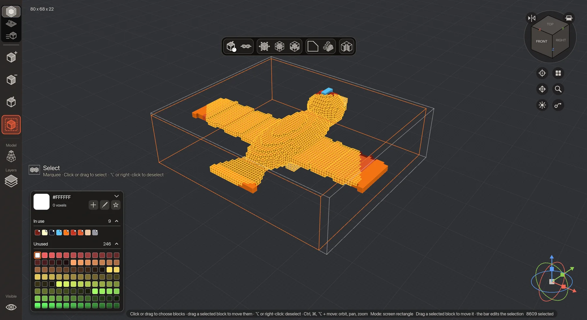
1 2 3 4- 1The selection bar. Each button acts on the selected voxels only.
- 2The gizmo. Drag a ring to turn the selection, an arrow to move it. It changes the real voxels, live.
- 3The readout says the mode and what a click does; the hint line counts the selected voxels.
- 4Visible. Take only the voxels you can see, not the ones behind or inside.
Ways to select
- Voxel, Face, Box: like Attach's modes, but marking.
- Marquee M drags a rectangle on the screen, Lasso O draws a loop.
- Shift+C adds every voxel of the same colour; the Tolerance slider takes close colours too.
- Shift+L adds everything joined to the voxel under the mouse.
- ⌘A all, ⌘I invert, ⌘+ and ⌘- grow and shrink.
- The Visible chip takes only the voxels you can see, not the ones inside.
- ⌃ + a number saves the selection in a slot; the number alone brings it back.
⌘C, ⌘X and ⌘V copy, cut and paste. ⌘ShiftV pastes mirrored. Esc deselects.
The mask
Shift+M turns the selection into a mask. Masked voxels are safe: no tool and no command changes them until ⌥M clears the mask. A chip on the rail shows the mask while it is on.
The section plane
A model is solid, and the inside is hard to reach. Page Down lowers a plane through it, layer by layer; Page Up raises it. Everything above the plane is hidden, and your tools work on the layer you see. The Section button on the nav cube's rim picks the axis.
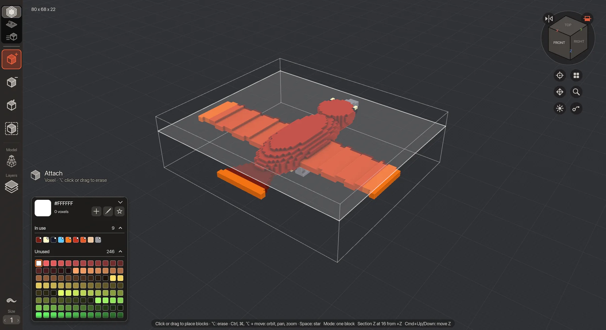
The mirror
Open Mirror on the rim, click X, and a plane stands in the model. Every voxel you place or erase has a twin on the other side. Symmetric things, like wings, come out symmetric. A Cage bend (Chapter VII) mirrors too.
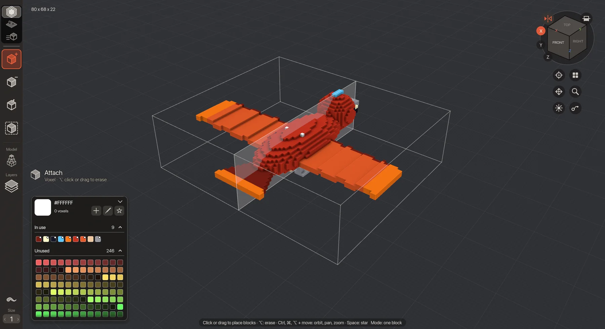
A cursor on the keys
The arrow keys step a cursor from cell to cell on the floor, as the view shows it. Shift+↑ and Shift+↓ step a layer. Return clicks at the cursor with the current tool, ⌥Return option-clicks. Move the mouse and the mouse has the cursor back.
The Big Commands
In which whole models are mirrored, hollowed, turned on a lathe and bent in a cage, and two quick menus are revealed.
Hover the Model button on the rail and the most used whole-model commands fold out. The rest, like Hollow, Bevel, Lathe and Twist, are a ⌘K away. Each one acts on the model, or on the selection when there is one, and most open a small dialog with a live preview.
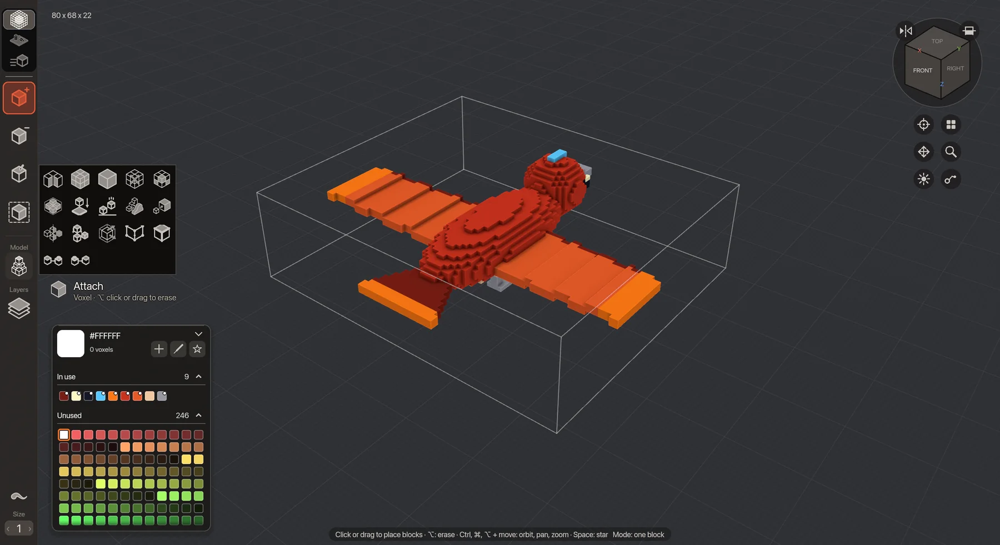
| Command | What it does |
|---|---|
| Mirror Half | Copies one half of the model onto the other, mirrored. Hover a choice to see it. |
| Hollow | Empties the inside. The walls stay. The file gets smaller and nobody can tell. |
| Grow / Shrink | Adds or removes a layer of voxels all round. |
| Bevel | Takes one voxel off every convex edge. |
| Smooth | Corners and bumps go, dents fill. |
| Lathe | Spins what you drew round the centre line. A profile becomes a vase. |
| Twist | Each layer turns a little more than the one below. |
| Loop | Shifts the voxels along an axis; they wrap round at the edge. |
| Repeat | Tiles the model along each axis. |
| Scale | Doubles or halves the resolution. |
| Rotate by degrees | Turns the model or the selection by any angle you type. |
| Resize, Fit Grid | Changes the grid, or shrinks it to the voxels. |
| Drop Voxels | Every selected voxel falls on its own until it lands. Sand, rubble, snow. |
| Crease | Finds the flat faces and raises bars on the sharp edges between them. |
| Cage | A lattice of points round the selection. Drag a point and the voxels bend. |
| Convert to Bricks | Every voxel becomes a brick. Chapter XI. |
The cage
Select some voxels, run Cage, and a lattice of orange points surrounds them. Drag a point: the real voxels bend with it, live. The chip row sets how many points per axis, locks an axis, and makes the bend soft. Done keeps it, Reset starts over.
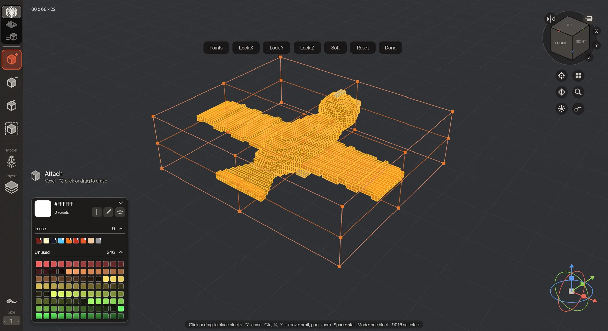
The star
Hold Space and a star opens under the pointer: an arm per tool, with its modes as chips, and arms for the whole-model commands, the shaders and the last command. Slide onto a chip and let go. Let go in the middle to cancel. View › Star switches it to pick on click instead.
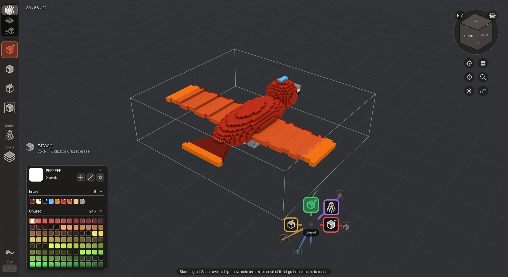
The command palette
⌘K opens a search over every command. Type a few letters, press Return. Commands with choices, like Mirror Half, list each choice as its own line.
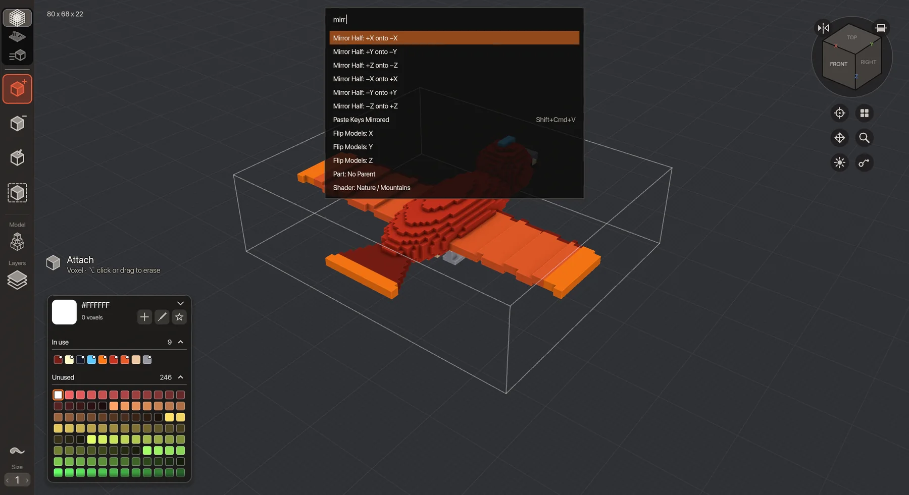
mirr, get every mirror. Also the Mountains shader, which sounds a bit like it.A Scene of Models
In which more than one model lives in the window, and they are picked, moved, copied, cut and lined up.
Press Tab and the rail turns blue: the Scene level. Models are now things. Click one to pick it, drag it to move it, drag the dots on its frame to stretch it. Double-click, or press Enter, to step inside and edit its voxels. Esc steps out again.
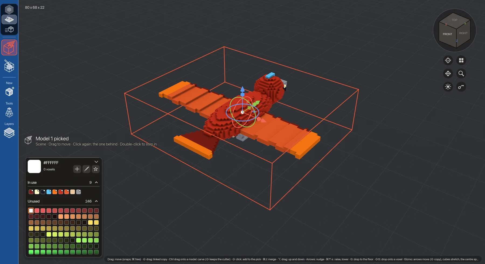
1 2 3 4 5 6- 1Pick and, under it, Cut C: click a model and a plane slices it in two. Tab turns the plane.
- 2New. An empty model, one from a file, a terrain, a heightmap from a picture, or any primitive.
- 3Tools. Drop, Fit, Flip, Pick Linked, Align, Array, Carve, Delete.
- 4The gizmo. Arrows move, rings turn by any angle, the centre drags freely.
- 5The frame. The picked model's box in red. Drag its dots to stretch the model.
- 6The hint line lists the scene keys. There are many. They are all here.
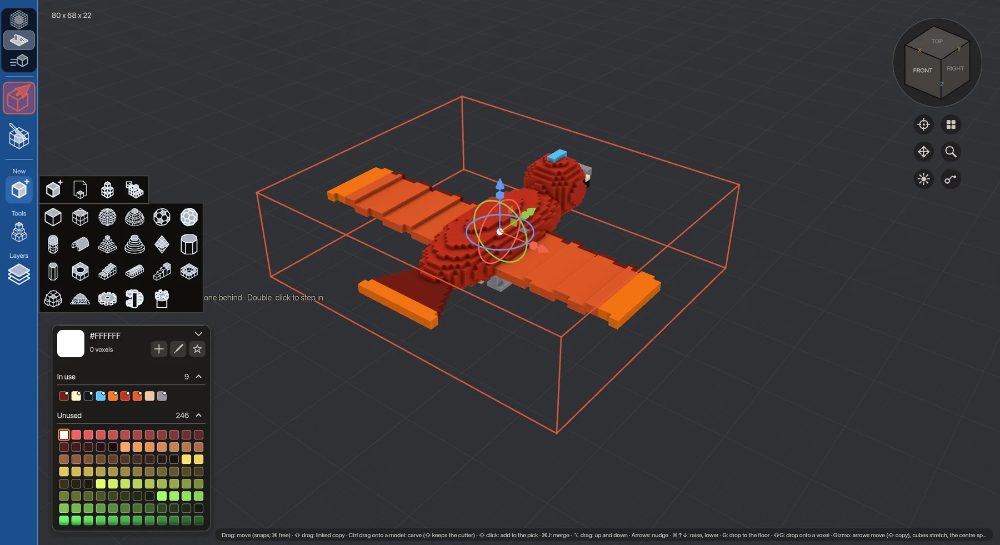
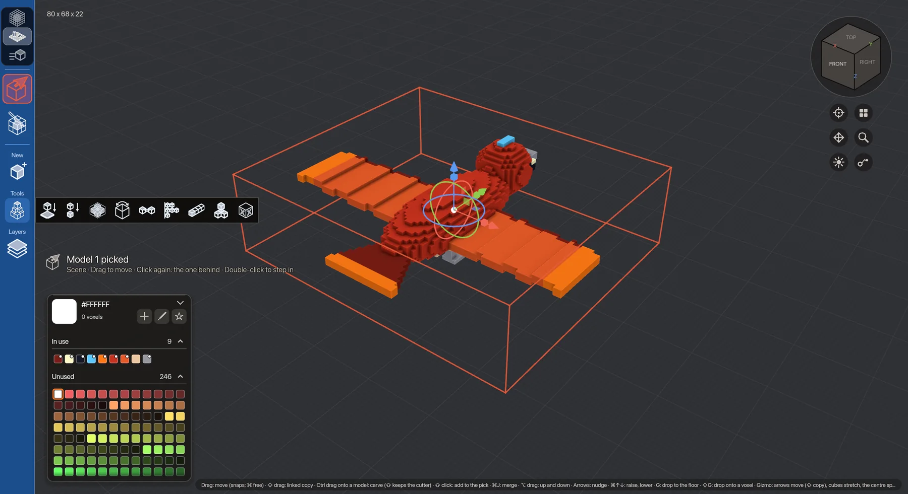
The scene keys
- G drops the picked models to the floor; ShiftG drops them onto the first voxel below.
- R turns a quarter turn, ShiftR back.
- The arrows nudge by one cell, Shift + arrows by ten.
- ⌥ + drag makes a copy. ⌃ + drag carves the dragged model out of the ones it crosses.
- ⌘J merges the picked models into one. Delete removes them.
- F frames the picked model.
Linked copies
A copy made with ⌥ + drag is linked: edit one and every copy changes. A chain on its row in the Layers list says so. Click the chain to make it unique. Ten windows in a wall want to be linked. Ten trees do not; each wants to be its own.
Layers
The Layers button opens a list. Each model sits on a layer; a layer can be hidden or shown with its eye. The list also shows which model is active.
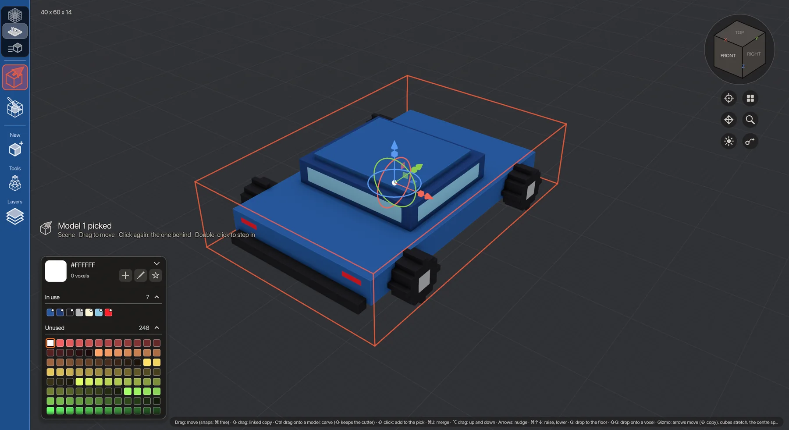
Looks and Light
In which the viewport changes its clothes twelve times, the room gets brighter, and the path tracer makes a picture.
View › View Settings opens a panel beside the model. Every change shows at once. The Look row is the big one: how the voxels are lit and drawn while you edit.
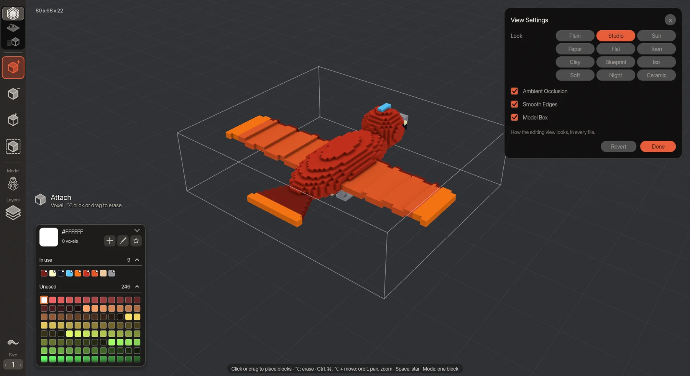
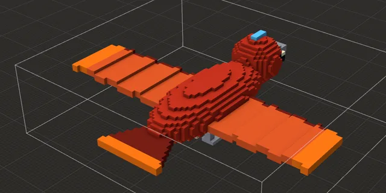
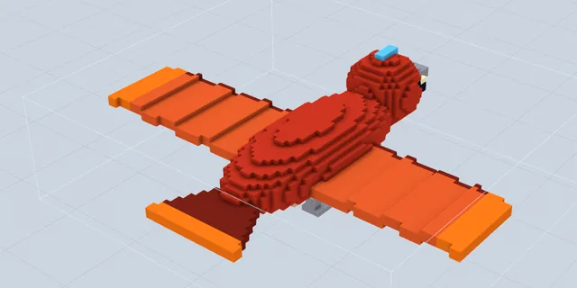
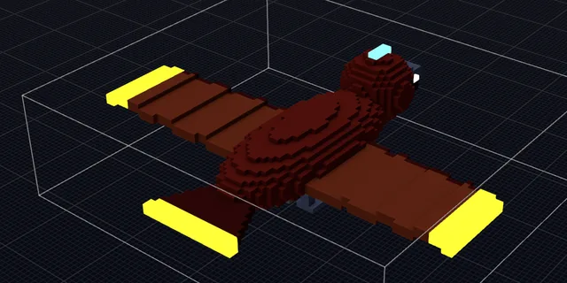
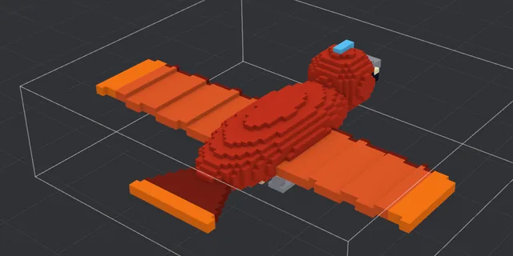
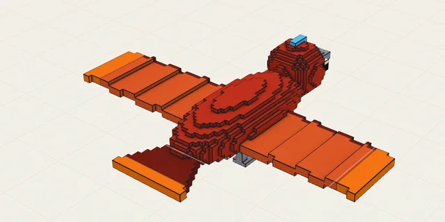
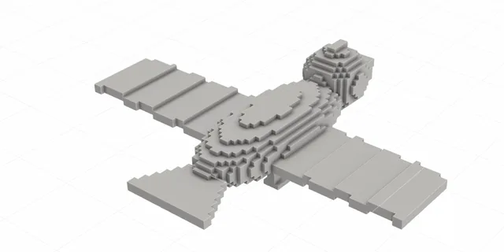
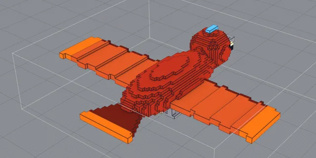
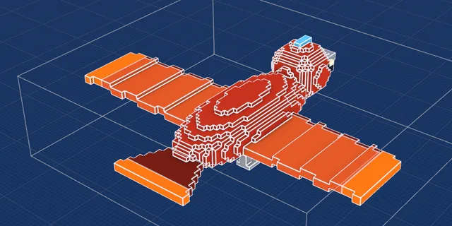
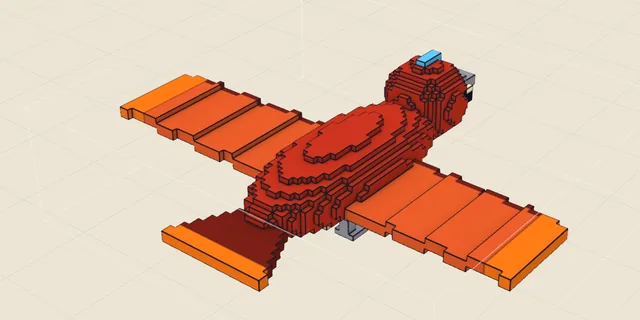
Rok remembers the look for the next start. View › Theme switches the panels and the rail between Dark and Bright; the model stays the same.
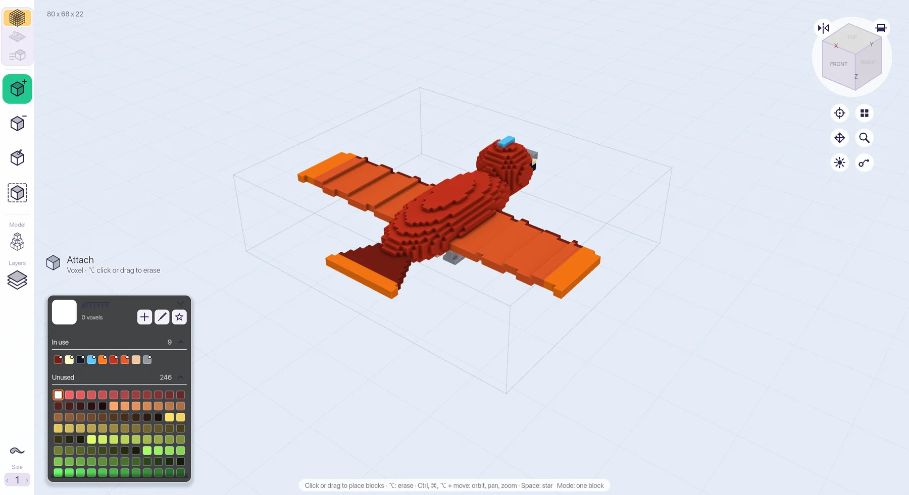
The rendered view
The sun button under the nav cube hands the viewport to Rok's path tracer. Soft shadows, glass, metal, glowing colours. The view keeps refining while you look; orbit and it starts over. Click the button again to go back to editing.
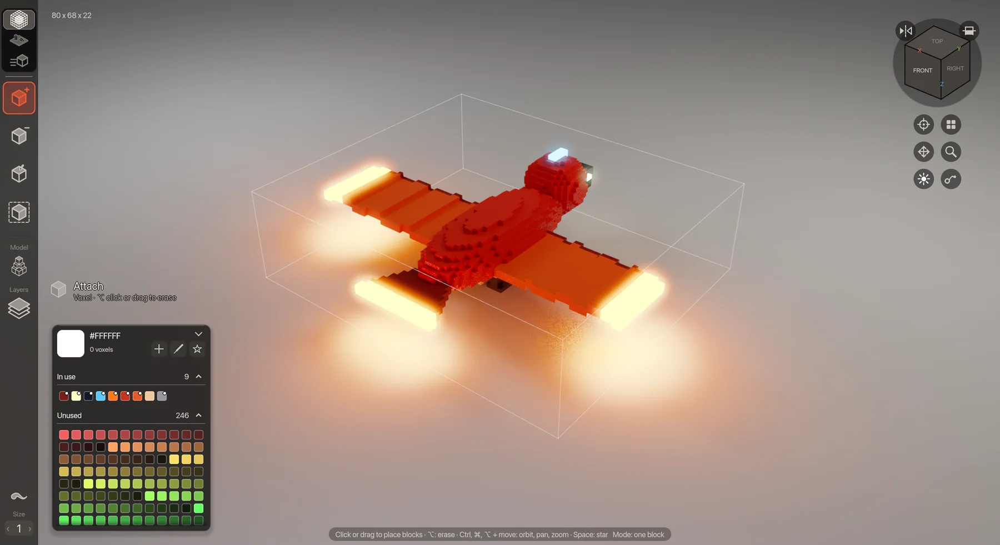
View › Render Settings opens the same panel for the light: a preset to start from, up to four lights you drag on the dome, the sky, the ground and the finish. The file keeps its light, also a .vox. File › Render Picture (⌘R) writes a finished PNG next to the file.
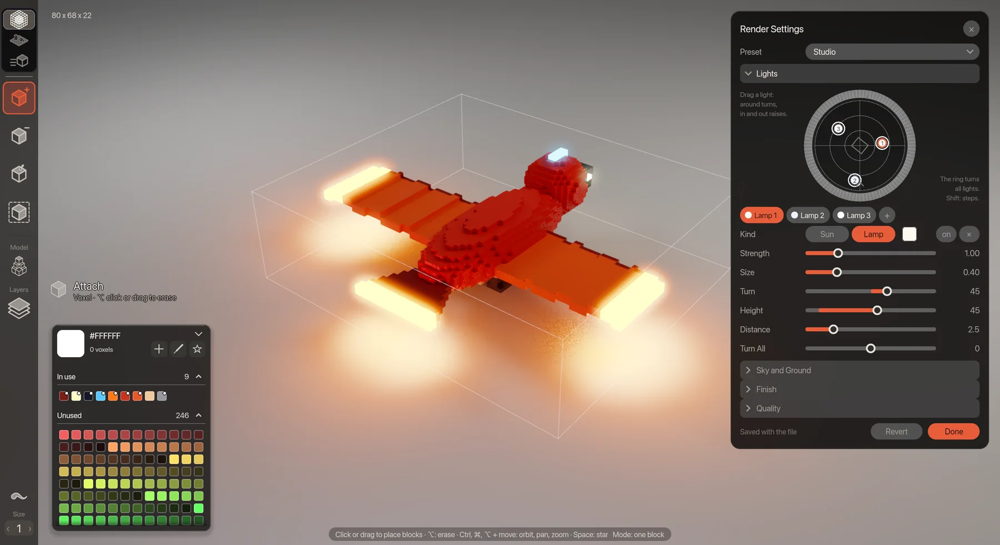
The CAD view
View › CAD View turns the model into a technical drawing: grey, with the three dimensions written on it. The chips at the top left switch between cells, metres and feet; a voxel's real length is kept with the file. Click an edge to measure it. Hidden shows the hidden edges dotted.
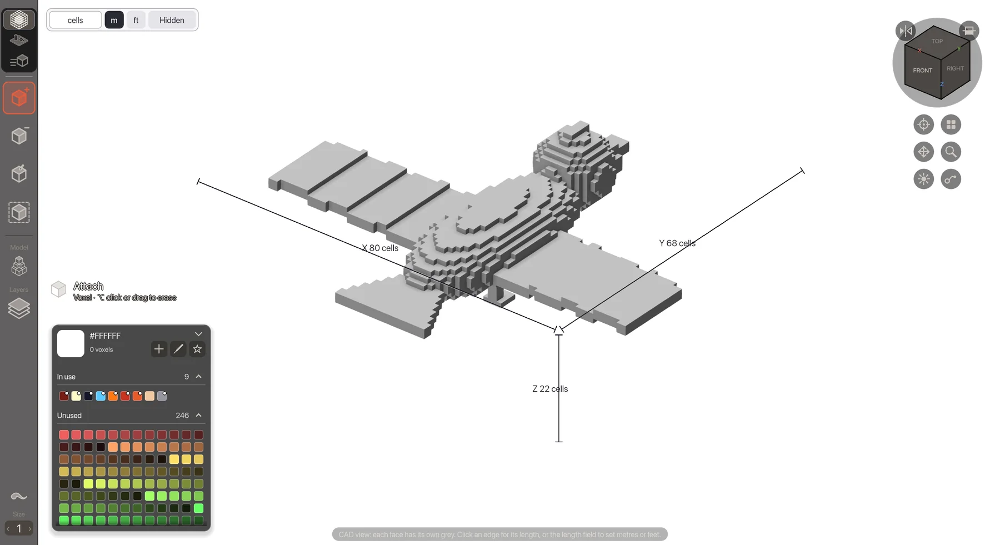
Shaders
In which the computer builds trees, cliffs and plating, and you take the credit.
A shader is a small program that writes voxels. Rok has 46 of them, in the xs format: nature (trees, cliffs, clouds, mushrooms, a volcano), hard surface (plating, windows, greebles), patterns, water and weathering. Shaders › Shader Gallery (⌘ShiftK) opens the gallery.
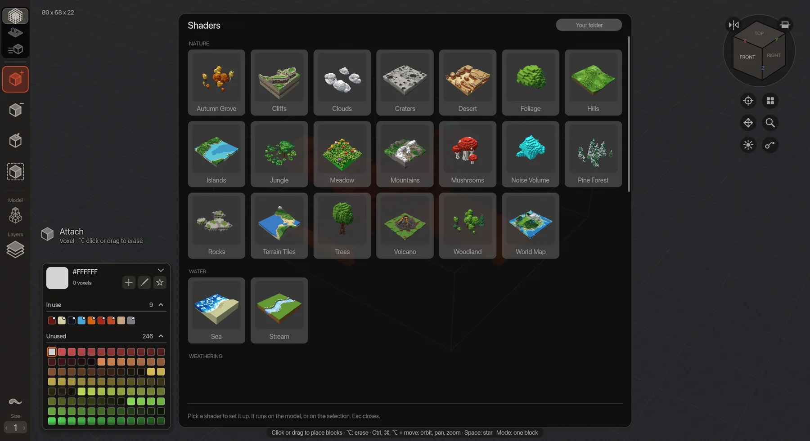
A shader opens a panel with its sliders, and a live preview shows the result before you keep it. The colours a run puts in appear as swatches; change a swatch and the run uses your colour. A shader can stay live on a model: edit the model, and the shader runs again. Shaders › Open Your Shader Folder is where your own xs files go.
Bricks
In which a model turns into bricks, and you build on it one brick at a time.
Edit › Brick Mode switches it on. The rail gets four brick tools and a bin of bricks opens on the right. A plain voxel model cannot take bricks yet: the Convert chip on the rail turns every voxel into a 1 × 1 brick first. From then on the model is built from bricks, and it stays that way until you convert it back.
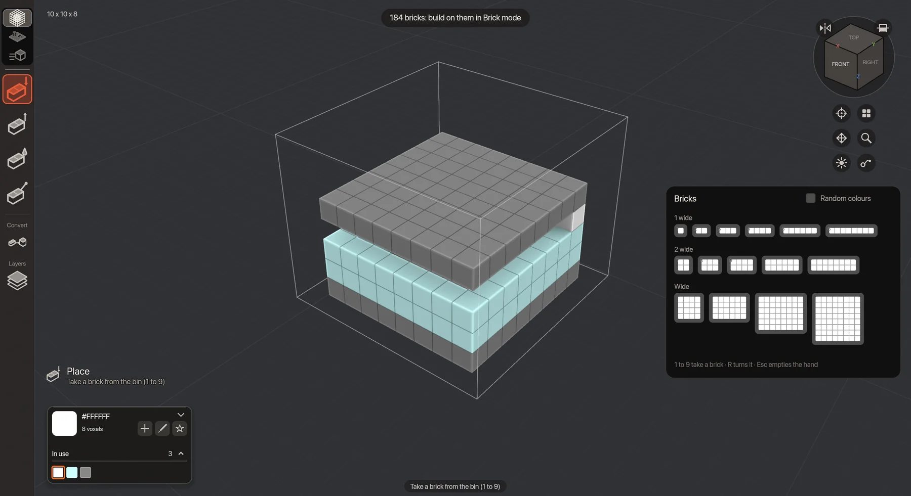
1 2 3 4 5 6 7- 1Place B: put the brick in your hand on the model.
- 2Pull U: take a brick out again.
- 3Paint G: give a brick the current colour.
- 4Pick I: take the brick under the mouse into your hand.
- 5Convert. Voxels to bricks, or bricks back to voxels.
- 6The bin. Fifteen bricks, 1 × 1 to 8 × 8. The keys 1 to 9 take the first nine.
- 7Random colours. Every brick you place gets a colour from a small bright set.
Take a brick from the bin and a ghost of it follows the mouse over the model. It snaps to the cells. R turns it, ShiftR turns it back. A green ghost fits. A red cage means it does not: something is in the way, or it would hang in the air. Click to place. Esc empties your hand.
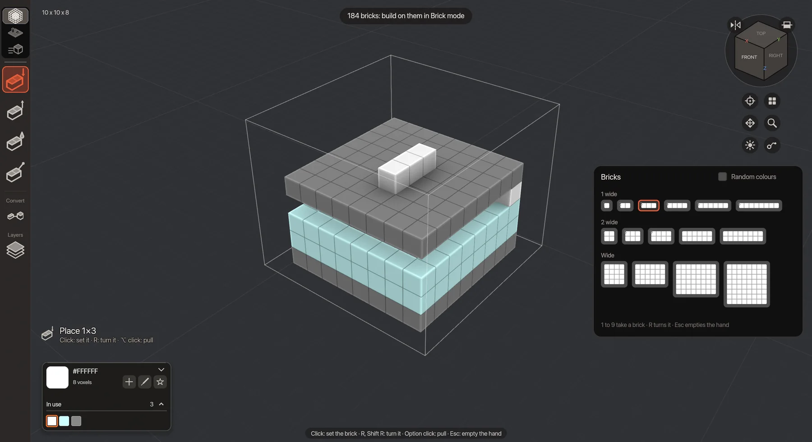
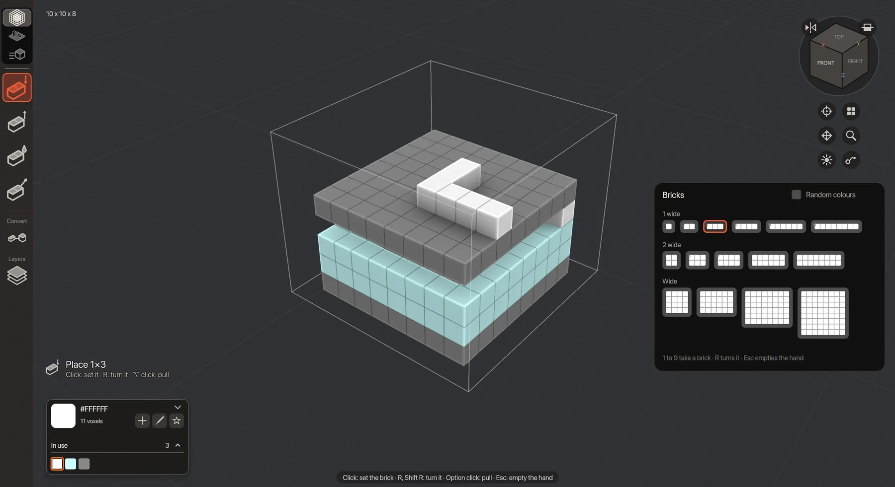
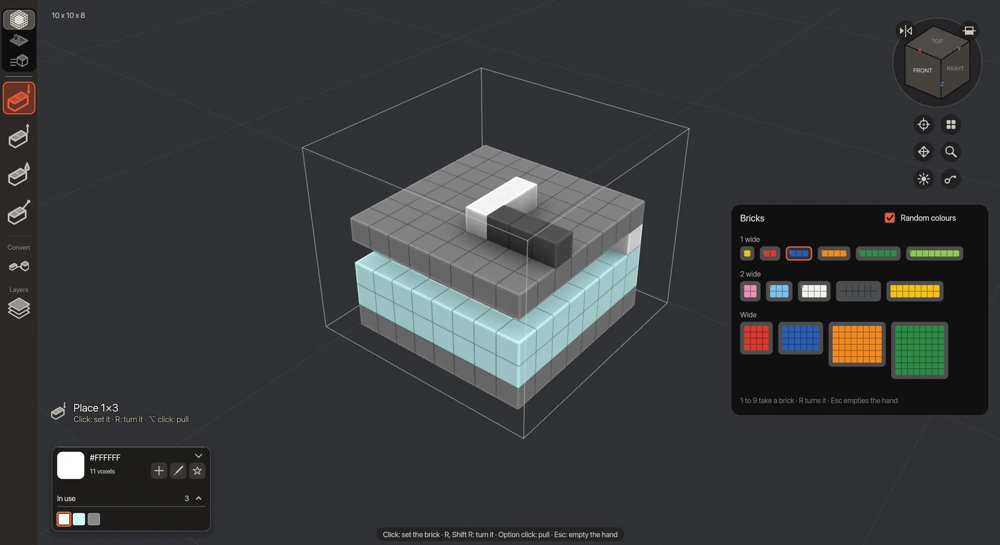
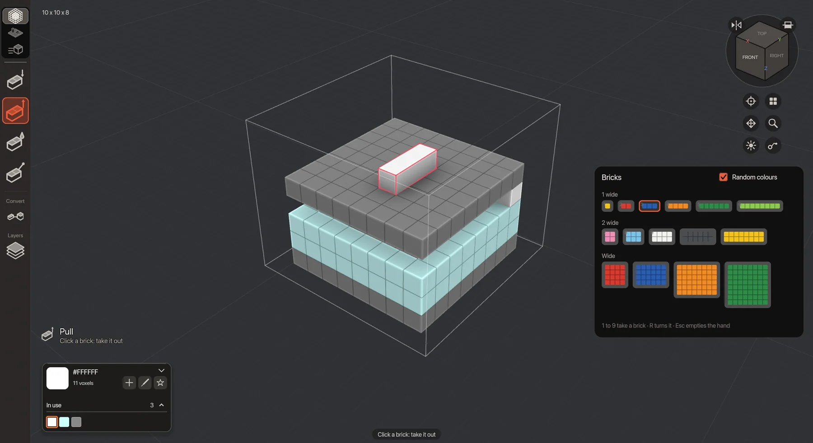
The lock
A brick model is locked against the voxel tools. Attach, Erase, Paint and every voxel command refuse it, and say why in the readout: build on it in Brick mode, or convert it to voxels. The scene can still move it and turn it about the up axis, but it will not flip it, stretch it or cut it. Bricks do not bend. That is the point of bricks.
The bricks are saved with the model in a .rok file. A .vox keeps the voxels and forgets the bricks.
Making It Move
In which parts get a timeline, a walk is played, and the whole thing goes out as a sprite sheet.
Animation works on parts. In the Scene level, select the voxels of a limb and run Make Part: they become a part of their own that follows the model. Then Tab to the Animate level. The rail turns violet, a timeline opens along the bottom, and the gizmo now poses parts instead of moving them.
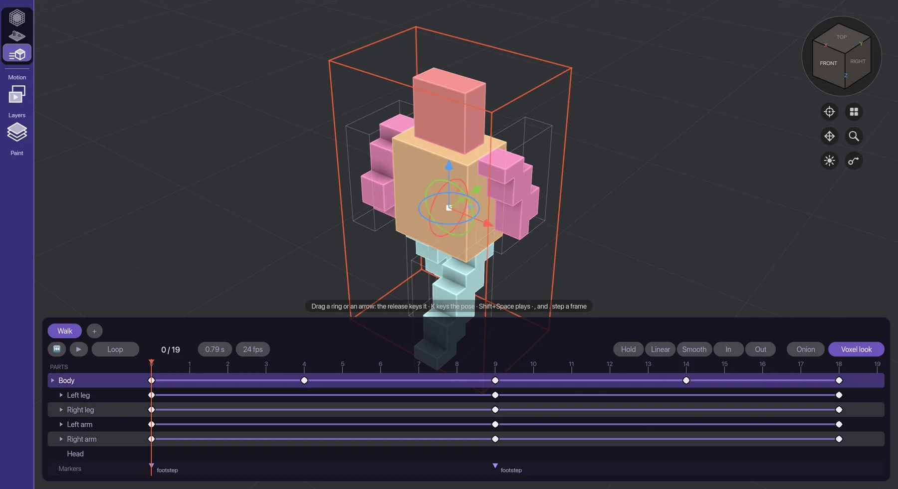
1 2 3 4 5 6 7 8- 1Clips. This file has a Walk. + adds another clip.
- 2Play, rewind, Loop. ShiftSpace plays too.
- 3The frame, the length in seconds, and the frame rate.
- 4Rows, one per part, with a diamond at every key. Drag the red head to scrub.
- 5Easing. Hold, Linear, Smooth, In, Out for the picked keys.
- 6Onion skins show the poses before and after.
- 7Voxel look snaps the poses to whole voxels while you work.
- 8Motion. A gallery of ready-made motions for the picked part: a spin, a swing and more.
Drag a ring or an arrow of the gizmo and, when you let go, the pose is keyed at the current frame. K keys the pose by hand. , and . step a frame; with Shift they jump to the next key. Delete removes a key.
A part can also have frames: whole voxel pictures that flip, like a blinking face. Paint them in the Animate level with Attach, Erase and Paint. A colour can move too: a track gives one palette colour a motion of its own.
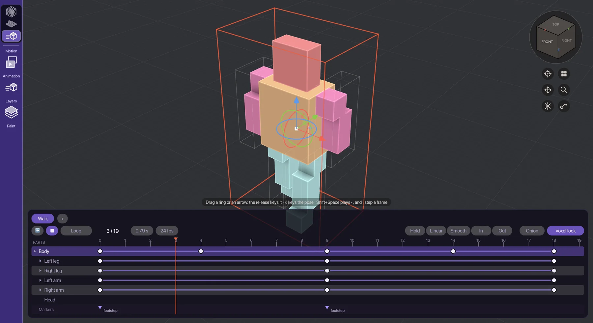
Out of the door
File › Export Animation writes the clips as glTF (parts that turn, or every frame baked as voxels), as a .vox with frames, as a sprite sheet with Aseprite JSON, as a GIF, or as an MP4. The MP4 needs ffmpeg.
A scene with animation saves as a .rok file, because a .vox has no place for it.
Files
In which two file formats are explained, the history is scrubbed, and a crash is survived.
Two formats
.voxis the common voxel format. Rok reads and writes it, with the palette, the models of a scene, and the light in a chunk that other programs skip. Most other voxel programs open it..rokis Rok's own file: a zip with ascene.voxinside and arok.jsonnext to it. It keeps what a.voxcannot: animation, bricks, live shaders, linked copies and the colour store. Unzip it and any.voxreader opens the scene.
Rok picks the right one. When a scene needs the Rok file, Save As says so and says why.
Export
- Export Mesh (⌘E) writes GLB, OBJ or PLY for game engines. Merge faces joins neighbouring faces of one colour into rectangles, for three to ten times fewer triangles.
- Export Animation: Chapter XII.
- Render Picture (⌘R): a finished PNG with the file's light.
- Export Palette: the colours as a small file.
The history strip
⌘L shows a strip along the bottom: the steps since the file was opened, up to the last 64. Drag along it and the model goes back and forth in time. Let go where you like it.
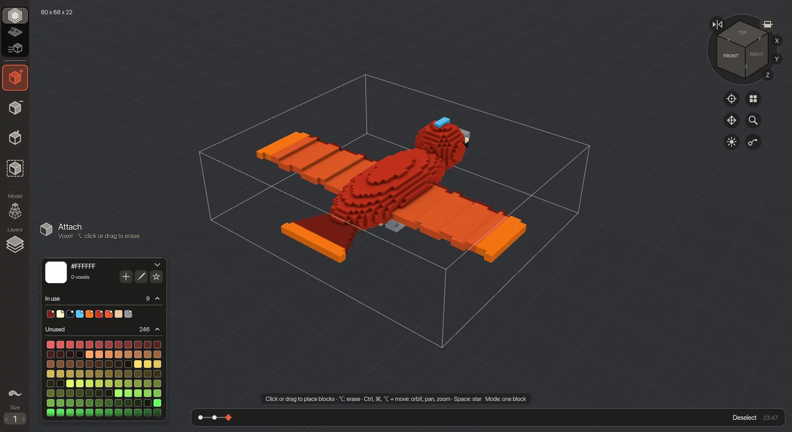
Recovery
Rok keeps a recovery copy of the open file while you work. If the app or the Mac goes down, the next start offers the copy. Errors in the window go to a log in the settings folder, which is the first thing to read when a tool stops working.
Every Key
In which the keyboard is listed, for the day you cannot find the hint line.
| Key | Model level |
|---|---|
| T R G Z | Attach, Erase, Paint, Select |
| V F B L C M O P | Voxel, Face, Box, Line, Center, Marquee, Lasso, Pattern |
| ⌥ click · Shift click | Erase · Paint, with any tool |
| I · ShiftI | Take the colour under the mouse · Inset the face under the mouse |
| H | Steady Hand |
| Space · ⌘K | The star · The command palette |
| WASD QE | Fly the view |
| Arrows · Shift↑↓ · Return | Step the key cursor · a layer up or down · click there |
| Page ↑ Page ↓ | The section plane up and down |
| ShiftC · ShiftL | Select by colour · Select connected |
| ⌘A · ⌘I · ⌘+ ⌘- | Select all · Invert · Grow, shrink the selection |
| ShiftG · ShiftD | Grow · Shrink the model by a layer |
| ShiftF · ShiftP | Fill connected colour · Paint the selection |
| ShiftM · ⌥M | Mask the selection · Clear the mask |
| ⌘C ⌘X ⌘V · ⌘ShiftV | Copy, cut, paste · Paste mirrored |
| 1…9 · ⌃1…9 | Recall a saved selection · Save one |
| Tab · Enter · Esc | Next level · Step into the model · Deselect, then step out |
| ⌘Z · ⌘ShiftZ | Undo · Redo |
| ⌘G · ⌘L · ⌘R · ⌘E | Voxel grid · History strip · Render Picture · Export Mesh |
| Key | Scene level |
|---|---|
| C · Tab | The Cut tool · turn its plane |
| G · ShiftG | Drop to the floor · Drop onto the voxel below |
| R · ShiftR | Turn a quarter · back |
| Arrows · Shift arrows | Nudge one cell · ten cells |
| ⌥ drag · ⌃ drag | A linked copy · Carve through the models you cross |
| F · ⌘J · Delete | Frame · Merge · Remove |
| Key | Animate level · Brick mode |
|---|---|
| ShiftSpace · , . · K | Play · Step a frame (with Shift: to the next key) · Key the pose |
| B U G I | Place, Pull, Paint, Pick a brick |
| 1…9 · R · Esc | Take a brick · Turn it · Empty the hand |
View › Customize Rail Menu and Keys… gives the whole-model commands keys of your own. The keymap is getting crowded; the hint line always tells you what is live.
Rok and the Machines
In which a language model is allowed to touch the voxels, under supervision.
Rok has a second user: a program. The MCP server (Rok for LLMs, in the README) gives a language model the same editor without a window: new scenes with a voxel budget, voxels set cell by cell, shapes, selection, the whole-model commands, shaders, animation, flat views to look at its work, and the path tracer for the finished picture. When Rok is open, the model edits the live window and you watch the voxels change.
The instructions push it toward true voxel art: small grids, few colours, deliberate cubes. Not a 3D model chopped into cubes. There is a difference, and it is the whole difference.